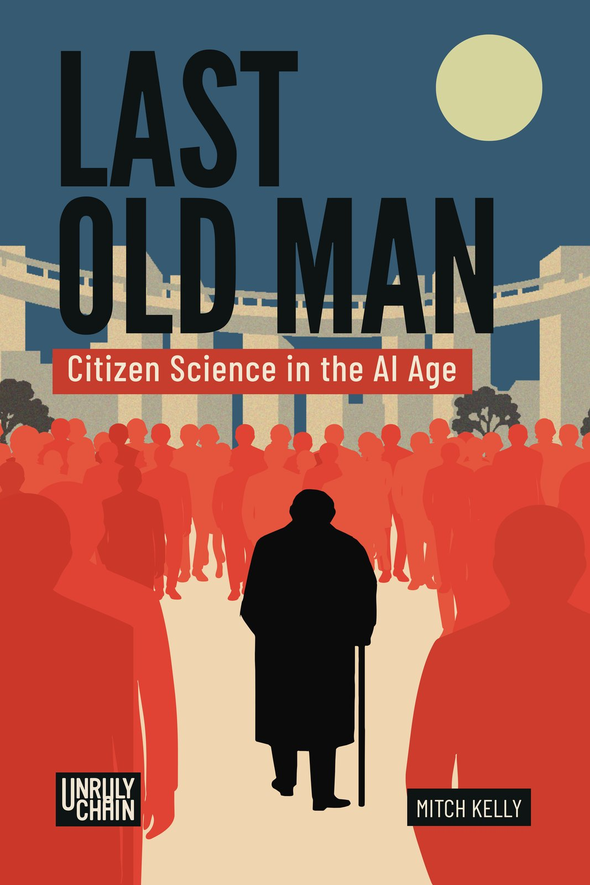

Last Old Man
Citizen Science in the AI Age
By Mitch Kelly
Announced · Unruly Chain

About the book
Last Old Man
Last Old Man: Citizen Science in the AI Age is an announced title from Unruly Chain. Publication details will be added as they become available.